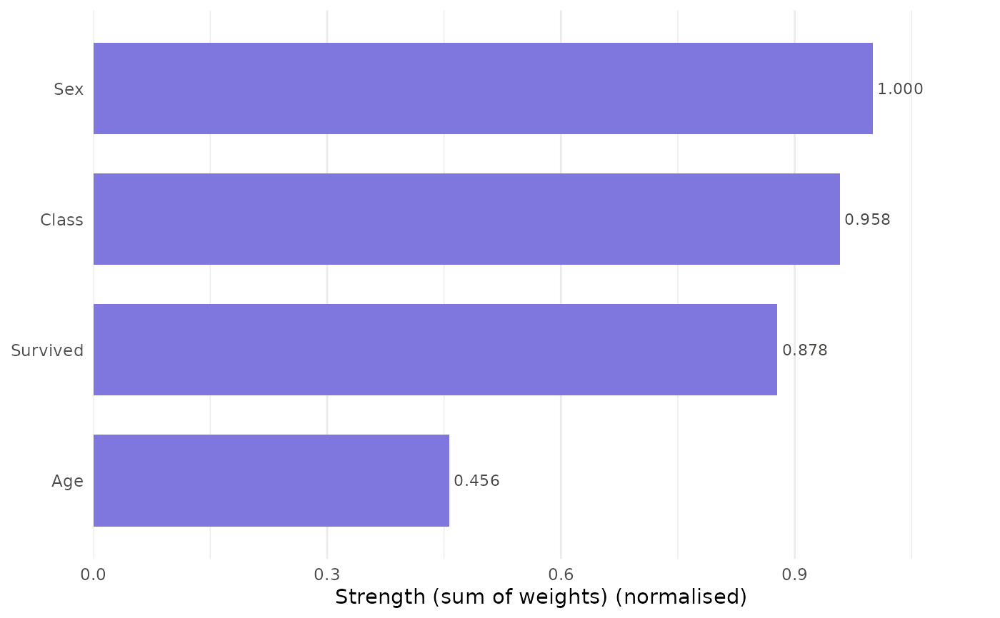
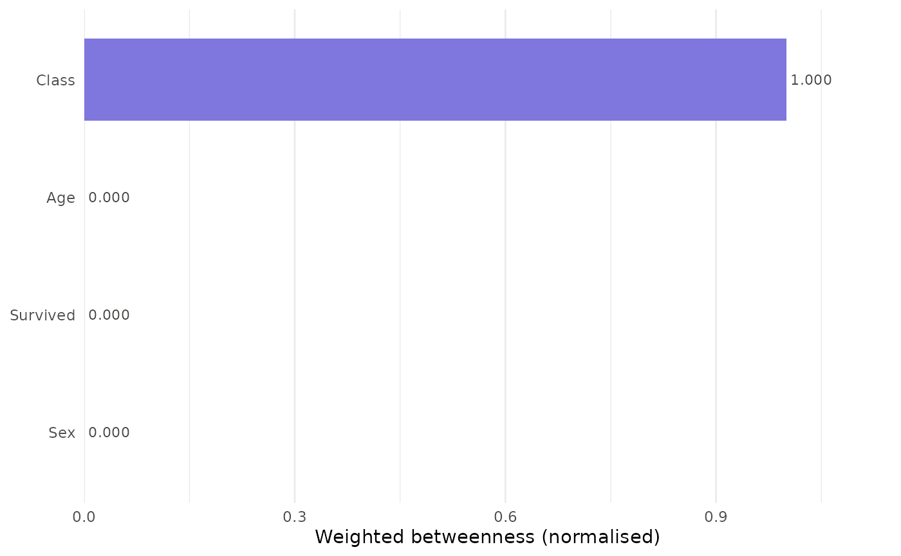

Produces a ranked horizontal bar chart of one or all centrality measures
from a catgraph object. When a single measure is selected the chart
shows bars ranked by that measure. When measure = "all", a faceted
or overlaid comparison chart is produced.
Usage
plot_centrality(
x,
measure = "strength",
normalize = TRUE,
title = NULL,
color = "#7F77DD",
engine = c("ggplot2", "base")
)Arguments
- x
A
catgraphobject.- measure
Character. One of
"strength","w_betweenness","w_closeness","w_eigenvector","w_pagerank", or"all". Default"strength".- normalize
Logical. Passed to
node_centrality. DefaultTRUE.- title
Character. Plot title. Default
NULL.- color
Character. Bar fill colour. Default
"#7F77DD"(purple-400).- engine
Character.
"ggplot2"(default) or"base".
Examples
df <- expand_table(Titanic)
cg <- catgraph(df)
plot_centrality(cg)

plot_centrality(cg, measure = "w_betweenness")

# plot_centrality(cg, measure = "all") # requires ggplot2